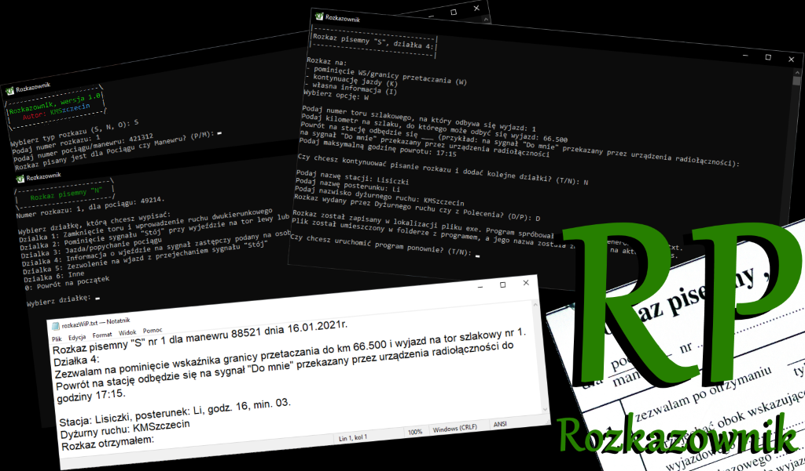

Rozkazownik - wersja 2.0.0
Last updated: 04.01.2022. No support provided.
Stara wersja programu, napisana jeszcze w C++, działająca z poziomu konsoli. Wspierała trzy języki - polski, niemiecki i angielski w interfejsie, jak i w wydawanych rozkazach.
Znajdujące się poniżej informacje pochodzą z oryginalnego wątku z forum TD2.
W skrócie - jest to samodzielny program obsługiwany poprzez Windowsową konsolę cmd - po otwarciu pliku exe całość programu wykonuje się w cmdku z drobną pomocą Notatnika przy wyświetlaniu gotowych rozkazów. Obsługuje się go za pomocą klawiatury, wpisując i zatwierdzając wymagane dane. Sposób działania jest bardzo podobny do KGRP autorstwa Stasia.
Najważniejsze funkcje:
- generowanie rozkazów pisemnych S, N i O,
- gotowy szablon na generowanie rozkazu na pominięcie wskaźnika W5/kontynuowanie jazdy,
- możliwość dodawania kilku działek jednocześnie,
- aplikacja zapisuje każdy wydany rozkaz w postaci pliku txt w miejscu instalacji z oznaczeniem typu, daty i godziny,
- pobieranie aktualnej daty i godziny, by ta została umieszczona w rozkazie.
Dostępne języki: polski, angielski (English, wzory rozkazów: leon78513), niemiecki (Deutsch, tłumaczenie: EUgenio07 + Saix95)